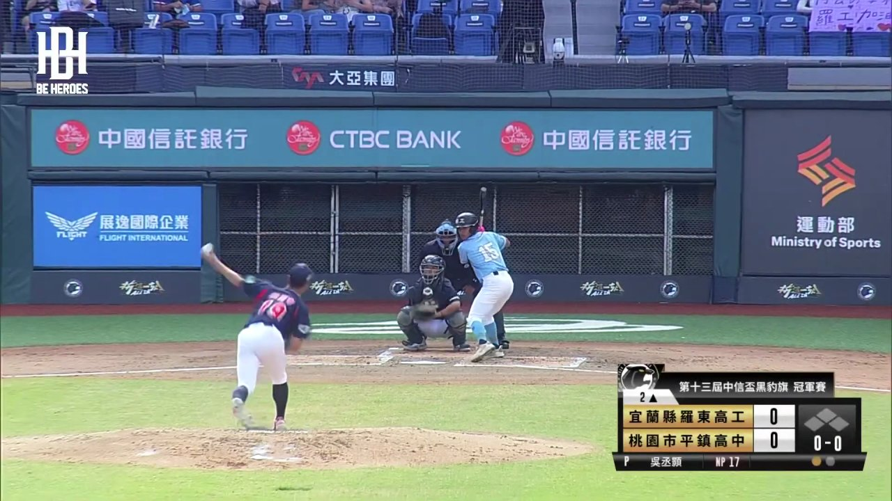
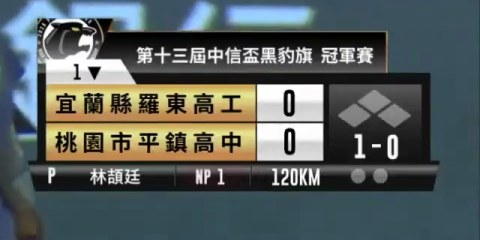
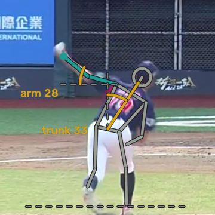
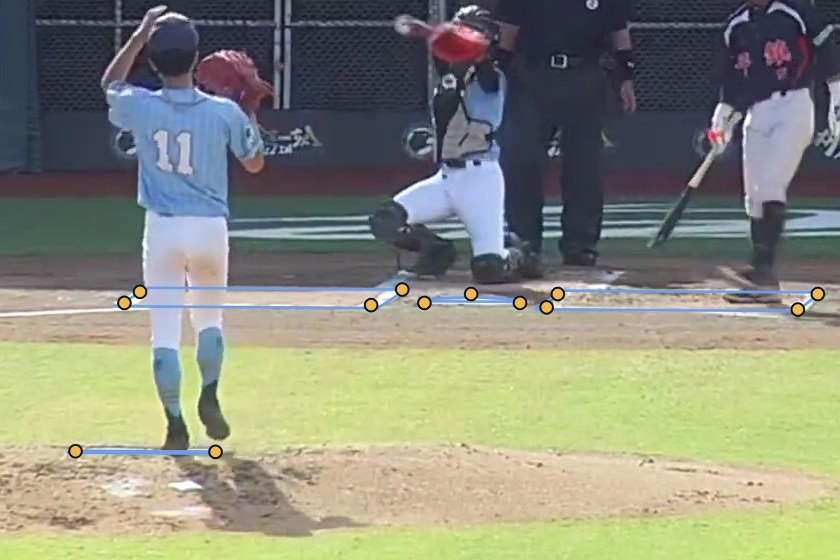
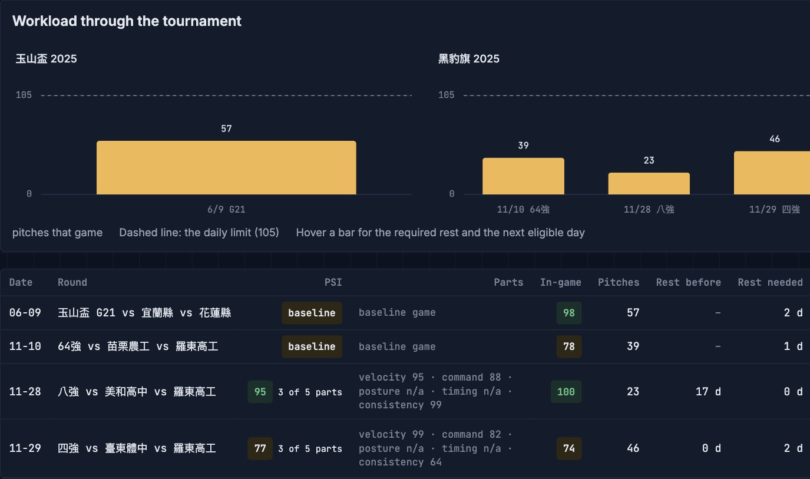

PSA · Pitcher Status Analyzer
How each pitcher's delivery and results change from one outing to the next. No tracking hardware, no paid data.
2026 野革盃 · Rebas hackathon
hakexva.github.io/psa-demo
The problem
Statcast, Hawk-Eye and TrackMan measure every pitch: speed, spin, release point.
Pitch counts by hand. No budget for tracking systems or paid data.
Tournaments such as 黑豹旗 are streamed free from a fixed centre-field camera. Later, a phone behind the mound at live ABs gives the same view in practice.
PSA · 02
Who uses it, and when
Users: high-school and amateur coaches, their pitchers and athletic trainers. No analyst and no tracking hardware: we process the public game video, and the coach opens a report link on a phone.
During a tournament
Each pitcher's report: pitches against the rest rules, speed and delivery against his earlier games, his second half against his first. Then the coach picks tomorrow's pitcher.
Between tournaments
玉山盃 in June, 黑豹旗 in November: did his fastball or his delivery move? Leads for the next training block.
In practice · planned
A phone on a tripod behind the mound gives the same view, so a coach can check a pitcher between games, not only at tournaments.
PSA · 03
The idea
Pitch count and speed from the scorebug, the pitcher's body at release from the centre-field camera, and each pitch's result from open play-by-play.

Broadcast frame

Scorebug: count, pitch count, speed

Pose at the release frame
PSA · 04
How it works
01
Centre-field frames kept; replays and close-ups skipped.
02
Count, pitch count and speed, by macOS text recognition.
03
Apple Vision body pose; a learned picker finds the release frame.
04
Matched to open play-by-play where it exists; otherwise the scorebug's count changes give the result.
05
PSI: this outing against his own previous three.
PSA · 05
The score
d = |change| ÷ threshold
Threshold: the smallest real change at 95% (pitch sampling, plus game-to-game variation between games). d = 1 is a change just big enough to be real.
Each part separately (velocity, command, posture, timing, consistency); the baseline is the previous three outings (between games) or the first half of the same game (in-game score).
part score = 100 · e^(−d²/4)
100 with no change, 78 at the threshold, 37 at twice it. Equal to 100 × Harrington's two-sided desirability (1965), n = 2, limits at ±2 thresholds.
PSI = ½ results + ½ mechanics
Results: velocity, command. Mechanics: posture, timing, release consistency.
80+ steady
60–79 worth a look
below 60 flagged
PSA · 06
An outing, scored
77
Velocity −1.0 km/h → 99
Command 19 points fewer strikes → 82
Release spread ×1.46 → 64
74
Timing: hip and shoulder timing moved → 32
Velocity −2.3 km/h → 80
Command → 96 · posture → 87
23 pitches the day before, 46 that day: within the rest rules, yet both scores say worth a look. A coach sees it the same evening, from the stream.
PSA · 07
Two scores, never mixed
| In-game score | PSI, between games | |
|---|---|---|
| Compares | his second half with his first half | this outing with his previous three |
| Threshold | pitch sampling only | sampling plus normal game-to-game variation |
| Null test | random halves of one game | game order shuffled in a season |
| League check | 0% of random halves flagged; a second-half velocity drop in 21% of starts | with game-to-game variation (1.5 km/h) in the threshold, 2% of shuffled outings cross, down from 23–31% |
PSA · 08 · Rebas Open Data 2023–2025, every CPBL outing
Every park's camera differs: the field is the ruler

Amber: the 13 points clicked by hand on one frame.
Blue: the boxes, plate and rubber at their official sizes, drawn back through the solved camera.
This frame: 5.9 px from the clicks on average. All 40 labeled CPBL videos solve too (5.4 px).
2025 黑豹旗 final, 羅東高工 vs 平鎮高中
PSA · 09
Live reports
Tournament · high school
宜蘭縣's 3 full games in June (羅東's pitchers): pitch counts against the 玉山盃 rest rules, PSI and an in-game score.
Tournament · high school
14 full games in November: the same pitchers five months later, plus 平鎮, 臺東 and 高苑.
Demo
2025 黑豹旗 final, 羅東高工 vs 平鎮高中: every pitch through the five steps.
Free
no hardware, no paid data
41
outings scored
4,834
pitches tracked
~1 hr
per full game, on a laptop
PSA · 10 · hakexva.github.io/psa-demo
The product

李鎮宸, 2025 玉山盃 and 黑豹旗
Bars: pitches per game day against the daily limit (105), with the rest required and the next day he may pitch.
PSI: each game against his earlier games, with the parts behind it.
In-game: his second half against his first.
Amber scores: worth a look before naming tomorrow's pitcher.
Data: free high-school tournament streams (玉山盃, 黑豹旗), with pitch counts and speeds read from the scorebug. A team's reports go only to its own coaches.
PSA · 11
What holds
114 / 114
automatic release picks within ±1 frame of hand labels, on a 黑豹旗 camera the picker had never seen
1.4°
median side-lean difference, same pitch in two CPBL broadcast cuts
0.1–0.5°
camera direction agreement between cuts of one CPBL feed
0.2%
of random halves flagged in 78 玉山盃 and 黑豹旗 outings: noise is not read as change
PSA · 12
What we can't claim yet
Result changes rarely reach the threshold
Fastball speed varies 1.5 km/h between games beyond sampling (CPBL 2023–2024). With that in the threshold, false alarms fall to 2%, but only drops beyond about 5 km/h are flagged, so almost no outing reaches the flag level: no 2025 CPBL outing, and none of 20 high-school pairs (was 40%).
Not yet confirmed by coaches or by results
High-school games have no open play-by-play, so only coaches can say whether a PSI flag mattered. In CPBL, a low results score did not predict the next start (ρ = −0.02).
Two tournaments, 16 pitchers
蔡辰瀧 (平鎮) lost 5.6 km/h over four 黑豹旗 games; 洪靖翔 (彰化) threw 7 km/h harder in November than in June's 玉山盃. Leads for coaches, and the reason PSI keeps its baseline within one tournament.
PSA · 13
Expected results and plan
Now
21 full games being processed: 2025's pitchers a year later.
10/25–11/29
Reports the morning after each game day for selected teams, running into the build phase from 11/21.
12/12 final
This year's 黑豹旗 reports, and the first coach ratings of the flags.
After the final
Game-to-game thresholds for posture, timing and consistency; a phone at live ABs with one school team.
Expected results
A report the morning after each game day
Coach ratings: the first outcome test for high-school flags
Every PSI part with a measured threshold
PSA · 14
Thank you
Everything in this deck runs on the demo site.
hakexva.github.io/psa-demo
→ The algorithm, with worked examples
→ 2025 玉山盃 and 黑豹旗 reports
→ One game, pitch by pitch
→ Method: data, checks and sources
Scan to open
2026 野革盃 · Rebas hackathon
PSA · 15